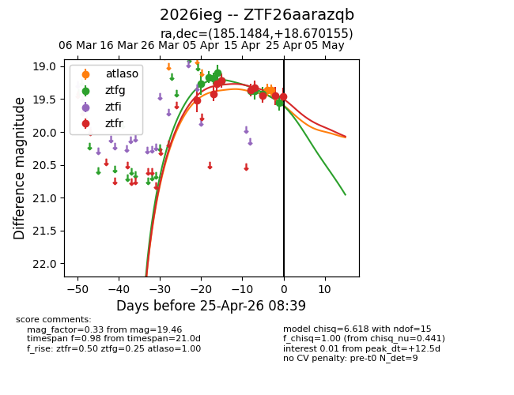
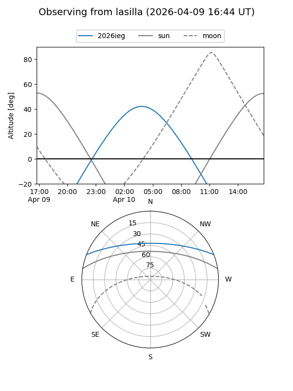
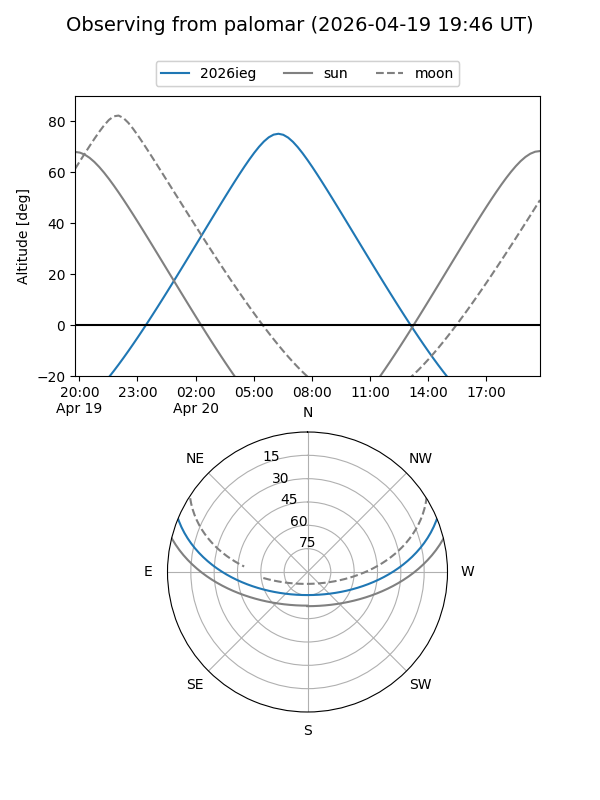
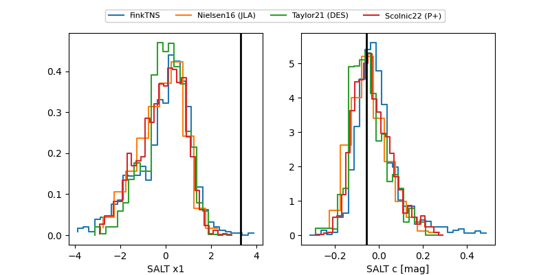

2026ieg
Target 2026ieg at 2026-04-25 08:40
Aliases and brokers:
FINK: link
Lasair: link
ALeRCE: link
TNS: link
YSE: link
alt names
ZTF26aarazqb (ztf,fink_ztf)
2026ieg (tns,yse)
Coordinates:
equatorial (ra, dec) = 185.1484,+18.67016
equatorial (HMS+DMS) = 12:20:35.61,+18:40:12.56
galactic (l, b) = (261.3327,+78.96164)
Flags:
Photometry:
last atlaso=19.36, ztfg=19.56, ztfr=19.46
2 atlaso, 9 ztfg, 9 ztfr detections
Lightcurve

Visibility


Additional plots
